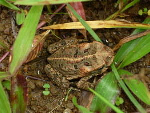

kaliskis 
/kaliskis/
n.
“scabies”
1.
n.
scabies
Ka seini ne lalag iyan sika se egpanubu te lawwa ta ne amana ne egdehes ne masalig amana ne layun ki rè se egkutkut.
Mahirap ka dalu ne kaliskis su egpekeiling ki te egpanguglung ka egpangutkut.
It's bad to have scabies because we will be liked playing guitar by scratching to it.
Eng. scabies; skin rash; rash
Tag. galís
Ceb. núka
Ilo.: gaddíl
Binukid: kaluli
OCM: Theory of Disease (753)
Online dict status: -
Usage level: F
v.
for someone (egkaliskisen, ingkaliskis/migkaliskis/pigkaliskis, agent, eg><en-)
Eng. to have scabies; scabies, to have
Online dict status: -
Usage level: M
v.
for something (egkaliskis, migkaliskis/ingkaliskis, agent, eg><ø-) to cause scabies
Eng. scabies, cause to
Online dict status: -
Usage level: M
n.
(kaliskisen, -en) scaby
Kaliskisen se lalap din.
her skin is scaby.
Eng. scaby
Online dict status: -
Usage level: M
2.
n.
Areca_ipot
a wild dwarf variety of betel palm
Cult. The fruit is used as a substitute for the betel nut.
Eng. betel palm
OCM: Flora (137)
Online dict status: -
Usage level: M
Updated by: RJH,AAA,TME,QDL,QDL,RJH,NJK,QDL
Last updated: 21/Jan/2010
"Migpangaliskis" in healthbook "Migpamawian ni Inuk ka sumbaley rin ne migpangaliskis"
"kaliskis" in healthbook "Migpamawian ni Inuk ka sumbaley rin ne migpangaliskis"
"kaliskis" in healthbook "Migpamawian ni Inuk ka sumbaley rin ne migpangaliskis"
"kaliskis" in healthbook "Migpamawian ni Inuk ka sumbaley rin ne migpangaliskis"
"kaliskisen" in healthbook "Migpamawian ni Inuk ka sumbaley rin ne migpangaliskis"
This page last updated: 19/May/2012
Copyright © 2009-2010, Matigsalug Language Christian Association, Inc